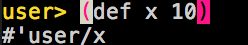
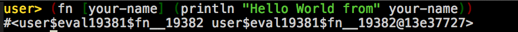
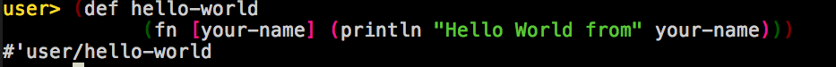
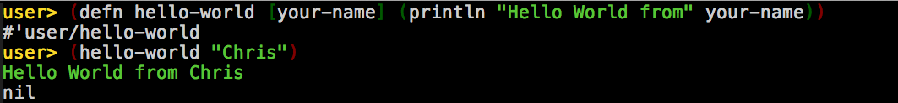

The REPL (Read-Eval-Print-Loop) is your friend
REPL is an interpreter for Clojure (although actually it JIT 'compiles' for Bytecode on JVM)
Define vars
Functions are first class 'objects'.
Function calls are lists:
(function arg1 arg2)
Function definition
Anonynous function (Lambda) - Syntactical sugar
Give your function a name using def:
defn is quicker, easier, more seductive..
Syntactical sugar:
Syntactical sugar:
Syntactical sugar:
"Leiningen!" he shouted. "You're insane! They're not creatures you can fight—they're an elemental—an 'act of God!' Ten miles long, two miles wide—ants, nothing but ants! And every single one of them a fiend from hell…"
Leiningen uses a project.clj file to define:
… etc
:dependencies [... [ring-middleware-format "0.5.0"] [org.clojure/tools.logging "0.3.1"]]
lein new compojure brownbag